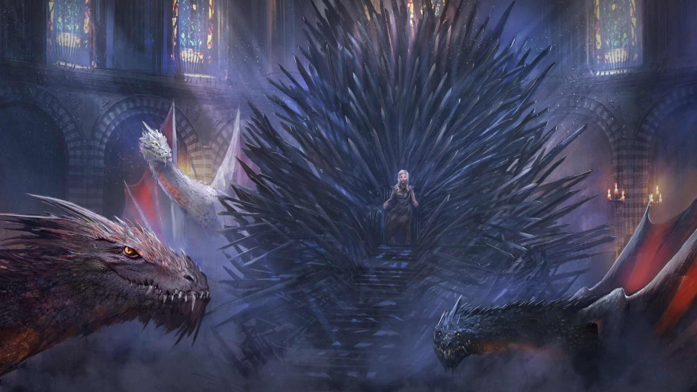

What is Game of Thrones?
A Clash of Kings and A Storm of Swords. As a whole, this series comprises a genuine masterpiece of modern fantasy, bringing together the best the genre has to offer. Magic, mystery, intrigue, romance, and adventure fill these pages and transport us to a world unlike any we have ever experienced. Already hailed as a classic, George R. R. Martin’s stunning series is destined to stand as one of the great achievements of imaginative fiction.
A GAME OF THRONES
Long ago, in a time forgotten, a preternatural event threw the seasons out of balance. In a land where summers can last decades and winters a lifetime, trouble is brewing. The cold is returning, and in the frozen wastes to the north of Winterfell, sinister and supernatural forces are massing beyond the kingdom’s protective Wall. At the center of the conflict lie the Starks of Winterfell, a family as harsh and unyielding as the land they were born to. Sweeping from a land of brutal cold to a distant summertime kingdom of epicurean plenty, here is a tale of lords and ladies, soldiers and sorcerers, assassins and bastards, who come together in a time of grim omens.
Here an enigmatic band of warriors bear swords of no human metal; a tribe of fierce wildlings carry men off into madness; a cruel young dragon prince barters his sister to win back his throne; and a determined woman undertakes the most treacherous of journeys. Amid plots and counterplots, tragedy and betrayal, victory and terror, the fate of the Starks, their allies, and their enemies hangs perilously in the balance, as each endeavors to win that deadliest of conflicts: the game of thrones.
Pros and Cons.
A Song of Ice and Fire on a whole was good.
Pros:
- Superb Character Development.
- Vivid Explanation of the world.
- Good battles.
- Interesting sub-plots
Cons:
- You have to very patient regarding the release of books.
- It is dark, full of gore, hence not for everyone.
- If you want world full of magic like Wheel of Time, Malazan, then you have come to a wrong place.
- A Feast for Crows was really bad.